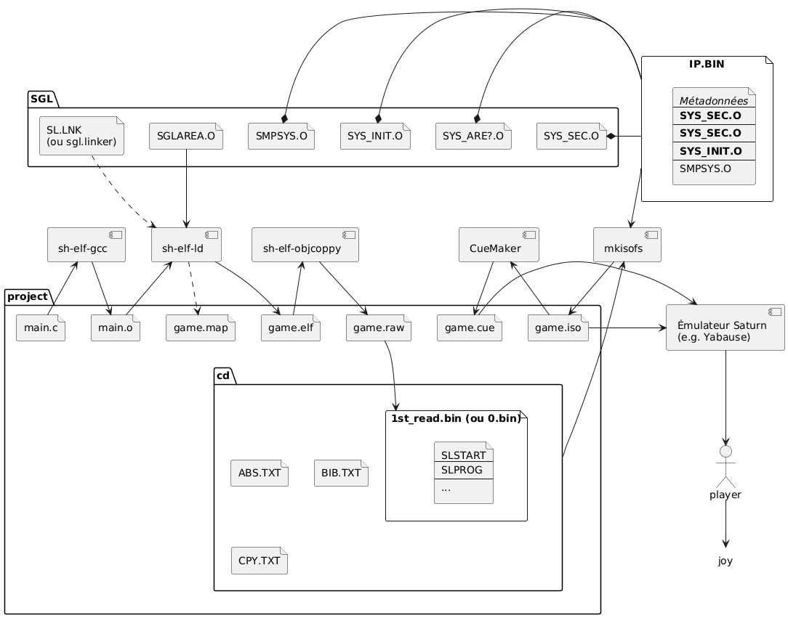
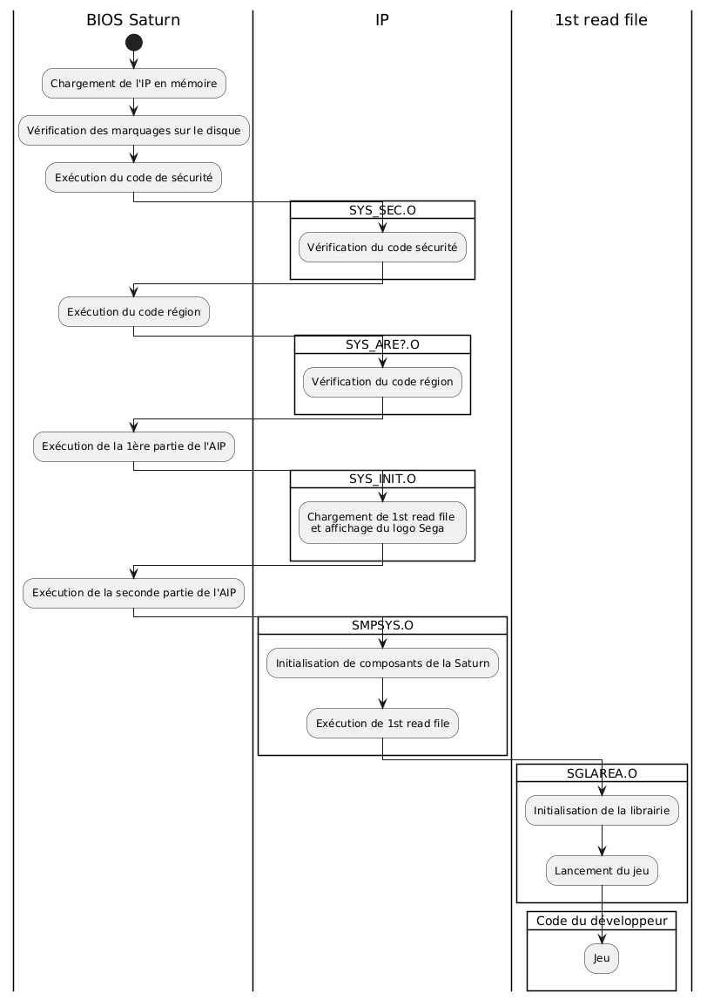
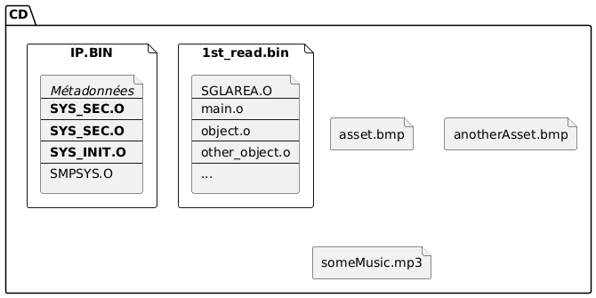

Le but de ce tutoriel est d’expliquer comment fonctionne un environnement de travail moderne pour Sega Saturn. Les différents fichiers et outils nécessaires sont présentés et leurs interactions expliquées. Nous décrivons la séquence de démarrage de la Saturn afin d’en tirer les contraintes que les jeux doivent respecter. Jo Engine est utilisé comme exemple pour certaines explications, mais ce tutoriel couvre bien n’importe quel environnement de travail.
Si vous programmez sur Saturn sans vraiment comprendre ce qu’il se passe ou à quoi servent certains fichiers ou étapes, ce document peut répondre à vos questions. En outre, il peut être un bon point de départ pour la programmation sur Saturn, bien que sa compréhension ne soit pas nécessaire pour ça. En effet, il existe des environnements de travail prêts à l’emploi qui abstraient brillamment ces questions pour l’utilisateur. Jo Engine est typiquement l’outil par excellence pour produire du code très rapidement, sans avoir à immédiatement s’enfoncer dans les méandres les plus complexes de la Sega Saturn.
Ce document ne constitue pas une explication détaillée de la séquence de démarrage de la Sega Saturn ou du fonctionnement de Jo Engine. Finalement, il s’agit encore d’un work in progress, écrit à mesure que l’auteur lui-même gagne en expérience en matière de développement sur Sega Saturn.
Si vous avez déjà ouvert un projet Sega Saturn, vous avez dû croiser de nombreux composants et fichiers que vous retrouvez sur le schéma ci-dessous. Ne vous inquiétez pas si vous n’y comprenez pas grand chose, c’est normal. Dans les Sections qui suivent nous allons expliquer tous les éléments représentés ici et leurs interactions.

Afin de produire un jeu, il convient d’utiliser un compilateur qui fonctionne sur PC, mais produit du code qui n’est pas dédié au PC, mais à la Saturn. On parle de “cross-compilation”. Il est possible de trouver divers cross-compilateurs prêts à l’usage en ligne, que le but soit de l’utiliser sur Linux ou sur Windows. Jo Engine est livré avec de tels compilateurs, les utiliser est une approche parfaitement acceptable. Néanmoins, dans cette Section nous donnons plus de contexte sur les différents choix qui s’offrent, et comment construire son propre cross-compilateur.
Les développeurs de l’époque avait la possibilité de travailler avec 2 compilateurs de types différents : le compilateur GNU (c’est le compilateur traditionnel qu’on voit partout, qui a connu des mises à jour jusqu’à aujourd’hui) et le compilateur Hitachi, c’est-à-dire développé par la boite qui a créé le processeur “SH2” de la Saturn. Les compilateurs de l’époque fonctionnent toujours aussi bien aujourd’hui, bien qu’ils ne contiennent pas les nouveautés qui ont été ajoutée dans les versions ultérieures. Par exemple, de nouveaux avertissements peuvent aider le développeur dans son travail. Néanmoins, les nouveautés les plus notables peuvent alourdir le code produit, ou consommer beaucoup de ressources et elle ne sont donc pas spécialement intéressantes pour le développement Saturn. Par exemple, il est possible de coder en C++ pour la Saturn, mais la gestion des exceptions, des constructeurs et destructeurs va prendre de la place en mémoire alors que cette dernière est déjà un important challenge à gérer, même en C. Dès lors il est rare de rencontrer des projets C++ sur Saturn.
Remarque: nous avons réalisé une comparatif de la taille des binaires produits avec GCC-14.2 et le GCC-8.2 utilisé par Jo Engine sur les 42 démos de Jo Engine. En moyenne, GCC-14.2 va produire un binaire 8,71% plus lourd. C’est une grosse différence, mais il convient de noter que les démos sont de tout petits jeux qui ne permettent pas d’étudier le comportement du compilateur sur un code plus volumineux et représentatif d’un jeu réel. Il n’est pas exclu que l’overhead produit par GCC-14.2 soit relativement constant et donc représente quelque chose de négligeable à l’échelle d’un jeu plus lourd. À l’inverse, il se peut que tout le code produit s’alourdisse de 9%, indépendamment de la taille du jeu. Une étude plus approfondie portée sur des projets plus volumineux est nécessaire pour tirer des conclusions exploitables.
De nos jours, les développeurs Sega Saturn peuvent construire leur propre compilateurs en construisant GNU GCC à partir des sources, en utilisant les flags nécessaires pour viser un processeur SH2 et produire un output au format “ELF”. Il y a de nombreuses nuances dans la construction d’un compilateur et nous ne nous attarderons pas sur cette question ici. Notez simplement que cela peut vite devenir un challenge de savoir quel flags indiquer pour inclure ou exclure les librairies utiles ou non dans le contexte d’un système comme la Saturn. Après tout, de nombreuses fonctionnalités des librairies standard C reposent sur le système d’exploitation de la machine qui fera tourner le code, or, la Saturn en est dépourvu. En outre tester le compilateur produit est en soi compliqué puisqu’il dépend de l’entièreté de l’environnement de développement pour fournir du code et vérifier qu’il tourne réellement.
En conclusion, nous invitons les nouveaux développeurs Saturn à utiliser un compilateur déjà tout prêt trouvable en ligne (e.g. ceux de Jo Engine ou Yaul). Et pour les plus curieux, nous proposons en annexe un script (Linux) pour créer son propre compilateur fonctionnel. C’est une base utilisable, mais nous n’assurons aucunement que le compilateur produit sera optimisé, dans la mesure où nous manquons nous-même de d’expertise dans ce domaine.
Remarque : un compilateur GNU sera typiquement nommé “sh-elf-gcc”, ce qui signifie “compilateur GCC qui produit du code pour processeur GCC et produit des exécutables au format ELF. Le format “COFF” est également acceptable, le compilateur sera alors typiquement nommé “sh-coff-gcc”. Inutile de chercher à comprendre la différence pour le moment, sachez seulement que les deux existent et lequel vous utilisez.
Remarque : typiquement, on ne crée pas un compilateur seul, on lui adjoint une série d’outils liés à la création et manipulation de fichiers exécutables. Dans le cadre du développement Saturn, nous auront besoin d’une commande en plus de sh-elf-gcc : sh-elf-objcopy. Elle permet de copier des morceaux précis des exécutables produits par sh-elf-gcc. Jo Engine contient cet outil tout prêt à l’emploi, et le script en annexe le produit également en même temps que le compilateur.
Avoir mis la main sur un compilateur est une bonne chose, mais il reste à comprendre comment l’utiliser pour produire un jeu valide. En effet, comme nous allons le voir dans les Sections qui suivent, le compilateur seul est loin d’être suffisant pour produire un binaire exécutable.
Pour comprendre le processus de création d’un exécutable valide, il faut comprendre comment la Saturn tente de l’exécuter. Lorsque vous placez un CD dans votre console et appuyez sur le bouton “power”, ces actions complexes sont toujours exécutées dans cet ordre :
Les jeux développés en utilisant le code mis à disposition par Sega, c’est-à-dire sans personnalisation, vont donc suivre la séquence illustrée ci-dessous…

… et sera disposé sur un CD comme indiqué ci-dessous (en gras, les élément non-personnablisables)…

… et sera chargé dans la mémoire de la Saturn comme ceci.
0x00000000 ┌───────────────────┐
│ BIOS │
0x00008000 ├───────────────────┤
│ ... │
0x06002000 ├───────────────────┤
│ IP.BIN │
0x06004000 ├───────────────────┤ (← adresse personnalisable en théorie)
│ 1st_read_file.bin │
├───────────────────┤
│ ... │
└───────────────────┘
La plupart des développeurs, aussi bien officiels qu’amateurs, prennent la main à partir de 4.2, en utilisant simplement les librairies et le code d’initialisation mis à disposition par Sega. C’est ce qui se passe si vous utilisez Jo Engine out of the box. Néanmoins le code d’initialisation (seconde partie de l’AIP (cf. action 3.4.) et le code d’entrée (cf. action 4.1.) peuvent être réécrits par qui bon le semble. Les Sections qui suivent expliquent comment préparer ces composants et ainsi mettre au point un environnement de travail complet.
À son lancement, la Saturn commence par rechercher l’IP sur les premiers secteurs du disque. Il convient donc de disposer de ce Initial Program et de le placer au bon endroit au moment de la gravure du CD. Nous expliquons quelques principes autour du fichier et ce qu’ils impliquent, avant de finalement expliquer comment concrètement créer son propre IP.BIN. Nous verrons comment le placer sur le CD dans un Section ultérieure.
L’IP est un fichier binaire contenant des données précises à des emplacements précis. Il débute par des métadonnées. Par exemple, les 16 premiers octets sont occupés par le texte “SEGA SEGASATURN ” (sic), la région où le CD est supposé être utilisé (Japon, USA, PAL…) est placée à l’adresse 0x0040 et occupe 10 octets, la liste des périphériques supportés par le jeu est placée sous deux formats à deux endroits différents. On y trouve également l’adresse où le 1st read file sera chargé en mémoire. Pour une explication plus détaillée des métadonnées de l’IP, consultez la documentation officielle de Sega, plus précisément “Disc Format Standards Specification Sheet Ver. 1.0” (document qui reste au demeurant incomplet au sujet de l’AIP).
Comme déjà annoncé à la Section précédente, ces métadonnées vont être contrôlées par les exécutables également présent dans l’IP. Ces exécutables sont des objets binaires (fichiers .o) fournis dans le kit de développement de Sega, sous licence, ainsi que du code d’initialisation à préparer soi-même (bien que Sega fournisse un code source exemple fonctionnel). Il s’agit du code de sécurité (SYS_SEC.O) et d’un ou plusieurs codes région (SYS_AREJ.O, SYS_ARET.O, SYS_AREU.O, SYS_AREE.O, SYS_AREL.O, SYS_AREK.O, SYS_AREB.O), de la première partie de l’Application Initial Program(SYS_INIT.O) qui doit être complétée par son propre code d’initialisation (qui deviendra la seconde partie de l’AIP). Le fichier exemple fournis par Sega qui suffit entièrement à produire un IP.BIN fonctionnel est nommé SMPSYS.C (Sample Application initial Program).
Tous ces objets sont exécutés dans l’ordre où ils sont listés ici. Il vont réaliser des tâches basiques d’affichage de licence et vérifications croisées avec les métadonnées de l’IP (e.g. le code région correspond-il bien à la métadonnée “région” indiquée plut tôt dans l’IP ?). L’Application Initial Program travaille un peu plus que les autres. Il lit et contrôle la plupart des metadonnées inclues au début de l’IP. En outre, il affiche le logo Sega pendant qu’il charge le 1st read file en mémoire à une adresse mentionnées dans les métadonnées (généralement à l’adresse 0x06004000, soit directement après l’IP).
Quand la première partie de l’Application Initial Program termine son travail, la seconde partie (c.-à-d. le code d’initialisation compilé par le développeur) est lancée. Ce code d’initialisation va réaliser des tâches de bas niveau, on peut parler de bootcode (effacer et initialiser des mémoires, configurer des interruptions, réinitialiser des périphériques, préparer la résolution de l’écran) et terminer en lançant le 1st read file.
Remarque: la première partie de l’AIP charge le 1st read file à une adresse mémoire spécifiée dans les métadonnées de l’IP (donc décidée en temps réel), mais la seconde partie de l’AIP proposée par Sega lance systématiquement le code à l’adresse 0x06004000 directement hardcodée dans SMPSYS.C. Autrement dit, s’il venait à quelqu’un l’idée de modifier l’emplacement où charger le 1st read file, il devrait lui-même modifier à la fois les métadonnées et la seconde partie de l’AIP de façon à les faire correspondre. Quel chipotage !
Remarque: tous ces objets sont fournis aux développeurs Saturn sous licence, leur utilisation sans permission n’est donc pas légale ! Néanmoins, les projets sans but lucratifs tels que ceux produits par la communauté homebrew se retrouvent dans une zone grise tolérée dans la pratique.
Remarque: les graveurs de CD à disposition du grand public ne permettent pas de marquer le bord du disque de façon à le rendre acceptable par une Sega Saturn. Néanmoins il est possible de faire produire de tels CD par des boites spécialisées !
La méthode officielle de création d’un IP demande de
Dans la pratique, il est plus facile de partir d’un IP fonctionnel et d’en modifier les métadonnées pour produire un IP personnalisé. Ci-dessous, un script qui permet de facilement créer son propre IP. Il suffit de le lancer à partir dans un répertoire qui contient un fichier IP.BIN pour produire NEW_IP.BIN avec les métadonnées qu’on introduit en modifiant les variables au début du script.
#!/bin/bash
# build_ip_bin.sh - Sega Saturn IP.BIN builder
# A valid IP.BIN file must be present to produce NEW_IP.BIN
# ================= USER SETTINGS =================
OUTPUT_FILE="NEW_IP.BIN"
HARDWARE_ID="SEGA SEGASATURN "
MAKER_NAME="SEGA TP KAISYA-A"
PRODUCT_NUMBER="1 " # 10 chars
VERSION="V0.001"
RELEASE_DATE="20251120"
DEVICE_INFO="CD-1/1 " # 8 chars
SUPPORTED_REGIONS="JTUE" # J T U E → will be padded to 10 chars
PERIPHERALS="J " # 16 chars
TITLE="MY GAME " # will be padded to 160 chars
IP_SIZE=0x00001800
FIRST_READ_ADDR=0x06010000
# ===================================================
pad() {
printf "%-$2.${2}s" "$1"
}
metadata="$HARDWARE_ID"
metadata+="$(pad "$MAKER_NAME" 16)"
metadata+="$(pad "$PRODUCT_NUMBER" 10)"
metadata+="$(pad "$VERSION" 6)"
metadata+="$(pad "$RELEASE_DATE" 8)"
metadata+="$(pad "$DEVICE_INFO" 8)"
metadata+="$(pad "$SUPPORTED_REGIONS" 10)"
metadata+="$(printf '%6s' '')" # 6 spaces
metadata+="$(pad "$PERIPHERALS" 16)"
metadata+="$(pad "$TITLE" 96)"
metadata+="$(printf '%16s' '')" # reserved
TMPFILE=$(mktemp /tmp/file.XXXXXX)
# Write metadata to file
printf "%s" "$metadata" > $OUTPUT_FILE
# Get rid of example IP.BIN's metadata, keep the rest.
dd if=IP.BIN bs=1 skip=208 of=$TMPFILE 2>/dev/null
#Append what we just cut after the metadata and voilà
cat $TMPFILE >> $OUTPUT_FILE
echo "$OUTPUT_FILE successfully created."
Remarquez que cette approche ne couvre pas tous les cas de figure. En effet, elle permet de modifier que les métadonnées de base, mais ne permet pas de modifier des points plus avancés. Par exemple, le code région de l’IP produit sera le même que dans l’IP initial. Donc si l’IP initial ne supporte qu’une région, l’IP résultant ne supportera que cette même région. En outre, vous perdez la possibilité de fournir votre propre code d’initialisation dans l’AIP, et bien d’autres paramètres personnalisables. Ceci dit ne perdez pas de vue que la plupart de jeux sont développés en utilisant simplement le code de Sega, donc ne vous inquiétez pas pour ça, à moins que vous ne souhaitiez réaliser quelque chose d’exceptionnellement spécifique.
Enfin, notez que ce script est basique et ne contrôle pas le respects de contraintes de taille entourant les différents champs. Il convient de se référer à la documentation Sega pour en savoir plus si nécessaire, cf. Disc Format Standards Specification Sheet Ver. 1.0).
Remarque: l’IP fournit avec Jo Engine couvre la plupart des cas d’utilisation d’un développeur homebrew. C’est donc une base suffisante pour créer son propre IP (vous pouvez également simplement l’utiliser en l’état si ça ne vous dérange pas que quelques métadonnées mentionnent “JO ENGINE” au début sur votre disque).
La lecture de l’IP se termine donc par le lancement du 1st read file. Dans cette Section nous expliquons plus en détail en quoi consiste un tel fichier avant de finalement présenter comment le créer.
1st read ile est un fichier produit par le développeur lui-même. L’environnemnet de développement Sega proposait de l’appeler 1st_read.bin; Jo Engine le nomme 0.bin. Son exécution démarre avec les premiers octets du fichier (sauf si le comportement par défaut proposé par Sega a été modifié en fournissant sa propre version de la seconde partie de l’AIP). C’est à cette emplacement que doit se trouver le code qui doit être exécuté en premier; dans ce document nous utilisons le terme “code d’entrée”. Il peut s’agir de code qui précède l’appel de main() afin de, par exemple, initialiser une librairie.
Les jeux trouvables dans le commerce utilisent presque tous du code d’entrée que Sega proposait dans le kit de développement officiel de la Saturn. La librairie la plus populaire était “SGL” et le code d’éntrée “SGLAREA.O”. Jo Engine utilise également ce code Sega (donc à nouveau sous licence). Sans ce code d’entrée, du code écrit en utilisant SGL planterait, puisque la librairie a besoin d’être correctement initialisée avant d’être utilisée.
Il n’est néanmoins pas nécessaire d’utiliser une librairie Sega et donc libre à chacun de choisir d’écrire son propre code d’entrée. Ce dernier peut, par exemple, ne rien faire d’autre qu’appeler main(), ou pourquoi pas appeler une autre fonction, ou réaliser quelques initialisation, mais à sa propre sauce. Certains projets et kits de développements homebrew le font, comme Yaul. En outre, il semble que Jo Engine tente de diminuer sa dépendance au code Sega au fil des versions, peut-être qu’in fine il existera une version parfaitement indépendante des librairies Sega.
Outre le code d’entrée, le 1st read file contient également le reste du code, c’est l’objet de la prochaine Section.
Le 1st read file débute par une initialisation - le code d’entrée - avant de lancer le code principal via une fonction comme main(). C’est tout simplement le jeu développé. Ce document n’ambitionne pas d’expliquer comment développer un jeu sur Sega Saturn, donc nous ne nous attarderons pas sur ce point ici. notez simplement que les librairies que vous pouvez utilisez dans votre code peuvent avoir besoin d’une initialisation et donc d’avoir préalablement exécuté un code d’entrée spécifique, comme c’est le cas pour SGL de Sega et son code d’entrée SGLAREA.O.
Portons plutôt notre attention sur l’assemblage du code d’entrée et code principal en un 1st read file valide.
Dans cette Section nous supposons que le développeur dispose d’un code de démarrage valide sous la forme d’un fichier .o, du code principal de son jeu sous la forme de fichiers source (.c, .h), et souhaite assembler le tout de façon à créer un 1st read file valide. Après tout, il est important que les premiers octets du fichier produit soient le code de démarrage, puisque c’est par là que l’IP va tenter de lancer le 1st read file, mais commment faire ça au juste ?
En 3 étapes : compiler les sources, les lier ensemble et enfin nettoyer le résultat pour ne garder que du binaire pur.
Nous disposons d’un cross-compilateur SH2 pour transformer nos .c en .o. Fondamentalement, cette étape n’est pas différente de n’importe quelle compilation de fichiers .c. Il est d’usage d’optimiser son code au maximum, éventuellement en fournissant des indications au compilateur pour le guider dans son travail (cf. Analyse des flags de compilation de Jo Engine en Annexe).
Une fois la compilation a proprement parler terminée, nos sources .c ont donné naissance à des fichiers .o et le compilateur appelle automatiquement le “linker” (ce dernier peut être accessible via un exécutable sh-elf-ld ou être caché dans sh-elf-gcc). C’est lui qui va “lier” les .o (issus de vos sources mais aussi de librairies que vous utilisez) en un unique fichier exécutable. C’est donc à lui que nous devons demander de placer le code de démarrage au début du fichier. On va communiquer avec le linker au travers de l’appel au compilateur en passant des arguments sous cette forme :
-Xlinker -argumentPourLeLinker
“-Xlinker” indique au compilateur “le prochain argument n’est pas pour toi, mais pour le linker”. Par exemple, Jo Engine passe les arguments suivant au compilateur :
-Xlinker -T$(LDFILE) -Xlinker -Map -Xlinker game.map -Xlinker -e -Xlinker ___Start
Donc le linker reçoit :
-Tsgl.linker -Map $(MPFILE) -e ___Start
Ce qui signifie :
Dans le linker script utilisé par Jo Engine ou SGL, on va trouver (entre autre) le bloc d’instructions ci-dessous.
SLSTART 0x06004000 : {
___Start = .;
*(SLSTART)
}
Ces lignes demandent au linker de créer une section “SLSTART” dans le fichier binaire et d’y rassembler toutes les sections nommées “SLSTART” qui se trouvent dans les fichiers .o traités. En outre, un symbole nommé “__Start” est créé; cela permet de faire référence à cet emplacement à partir d’autres endroits… comme nous l’avons vu juste avant avec les arguments passés au linker : “-e __Start”. Finalement, on voit apparaître à nouveau la fameuse adresse mémoire 0x06004000, de façon à la placer à l’intérieur même du fichier binaire produit, de sorte à ce qu’il soit conscient qu’il se trouvera à cet emplacement lors de son exécution.
Nous évoquons les sections “SLSTART” des fichiers .o traités. Pour comprendre ce que ça signifie, il faut s’intéresser à la structure des fichiers .o (juste un peu, c’est promis). Un fichier objet va typiquement être constitué de plusieurs sections. La plupart du temps, il s’agit de sections portant des noms génériques qu’on retrouve dans la plupart des .o. Par exemple, une section pour les variables, une autre pour les variables globales, une section pour le code, etc. Mais il est possible de créer un .o de sorte qu’il contienne une section dont on personnalise le contenu et le nom. Sega a précisément fait ça dans avec son code d’entrée : SGLAREA.O. En fait, pour être précis, le code d’entrée est la section “SLSTART” du fichier SGLAREA.O. Donc c’est cette section qui doit se retrouver au tout début du 1st read file. Et lorsqu’on demande de rassembler “toutes les sections SLSTART” de tous les fichiers .o, on sait très bien qu’une seule section sera trouvée et placée à cet emplacement : celle de SGLAREA.0.
Maintenant que nous avons passé en revue tout ces points, nous pouvons les assembler et comprendre ce qu’il se passe. “-e __Start” signifie “l’exécutable commence là où se trouve le symbole __Start”, or le linker script définit le symbole __Start là où on place la section SLSTART de SGLAREA.O. Bref, nous demandons au fichier de démarrer avec le code de démarrage, soit exactement ce que nous cherchons à faire depuis le début.
Remarque: : utiliser la librarie SGL de Sega demande un peu plus de travail que seulement correctement placer son code de démarrage. Il convient également de demander au linker de placer une autre section de SGLAREA.O entre des symboles précis pour que SGL la retrouve facilement. C’est le sens de l’extrait du linker script de Jo Engine illustré ci-dessous : rassembler toutes les sections “SLPROG” dans une unique section “SLPROG” au sein du binaire produit, nommer le début de la section “__slprog_start” et nommer la fin de la section “slprog_end”. Cela va permettre au code de démarrage de retrouver un autre morceau de code de SGLAREA.O en mémoire pour le copier ailleurs.
SLPROG ALIGN(0x20): {
__slprog_start = .;
*(SLPROG)
__slprog_end = .;
}
À ce stade le compilateur et le linker reçoivent toutes les instructions nécessaire pour accomplir la tâche qu’on leur demande. Le résultat de la compilation sera un fichier binaire, typiquement au format .elf, accompagné d’un optinel fichier “game.map” si on l’a demadné au linker.
Remarque : le format .elf est une norme pour représenter un exécutable binaire. La norme définit un en-tête d’un certain format, suivi d’un genre de table des matières, puis le corps de l’exécutable suivi de ceci, puis de cela… Il est possible de parfois rencontrer un format plus ancien mais également utilisable : .coff. Par exemple, le kit officiel Sega utilise et crée des fichiers .coff. Utiliser l’un ou l’autre ne change pas grand chose. Il convient juste de savoir ce qu’on fait et de ne pas tout mélanger. Par exemple, votre compilateur produit-il des fichiers .elf ou .coff ? Les libraries de Sega sont au format .coff, mais vous pouvez trouver en ligne des versions converties au format .elf; laquelle utilisez-vous ?
Un rapide coup d’œil au fichier .map permet de vérifier que le code d’entrée est placé au bon endroit. Si tout s’est bien passé, nous devrions retrouver des lignes similaires à celles ci-dessous. On voit apparaître une Section SLSTART à l’adresse 0x0000000006004000, qui correspond au symbole “__Start” et ensuite des objets SGL semble avoir été injectés (sgI00.o)… c’est un succès !
(...)
Linker script and memory map
SLSTART 0x0000000006004000 0x30
0x0000000006004000 ___Start = .
*(SLSTART)
SLSTART 0x0000000006004000 0x28 /path/to/lib/SGL302J-ELF/lib/LIBSGL.A(sglI00.o)
0x0000000006004000 SGL_Start
0x0000000006004002 slStartSGL
.text 0x0000000006004040 0xe420
*(.text)
.text 0x0000000006004040 0x0 /path/to/lib//SGL302J-ELF/lib/SGLAREA.O
.text 0x0000000006004040 0x14b0 /tmp/cc1dYg0w.ltrans0.ltrans.o
.text 0x00000000060054f0 0x238 /path/to/lib/SGL302J-ELF/lib/SEGA_SYS.A(sys_exit.o)
0x00000000060054f0 sys_version
0x0000000006005510 SYS_Exit
(...)
Nous possédons maintenant un fichier .elf valide, et pourtant la Saturn n’en voudrait pas si on lui présentait en l’état. En effet, le format .elf (ou .coff) encapsule le binaire lui-même avec des métadonnées, des tables, des en-têtes… Or, la Saturn va juste lire le fichier dès ces premiers octets en s’attendant à y trouver des instructions binaires et pas ces métadonnées. Il nous reste donc à libérer le cœur du fichier .elf, c.-à-d. l’exécutable en soi, des bidules qui l’entourent. Heureusement, c’est une étape très simple.
Supposons que notre fichier se nomme game.elf. Alors on exécutera la commande suivante :
sh-elf-objcopy -O binary game.elf game.raw
Ceci signifie tout simplement “copie le contenu binaire de game.elf dans un nouveau fichier nommé game.raw”. Pour rappel, la commande sh-elf-objcopy (ou sh-coff-objcopy) est typiquement créée/obtenue en même temps que le compilateur (cf. Section Compilateur SH2).
Remarque : une fois l’exécutable pur extrait, il n’y a plus de différence entre format ELF ou COFF, puisque les 2 se distinguaient précisément par les métadonnées dont nous nous sommes débarrassées.
Cet exécutable pur, c’est notre 1st read file. Le kit officiel Sega propose d’appeler le fichier 1st_read.bin et Jo Engine le nomme 0.BIN. Vous pouvez nommer le fichier comme bon vous semble, mais si vous voulez optimiser jusque dans les derniers détails, alors remarquez qu’un nom plus court signifie quelques octets de gagnés en mémoire. Et surtout, ne perdez pas de vue que le fichier sera recherché sur base de son nom, tel qu’écrit dans l’IP. Donc si vous réutilisez l’IP de Jo Engine, vous devez nécessairement appeler votre 1st read file 0.BIN car c’est ce nom qui sera recherché. Pour choisir un nom de votre choix, il convient de créer son propre IP.
Après tout ces efforts, il reste encore à fournir à la Saturn notre IP.BIN et notre 1st read file, et nous allons les lui servir sur un plateau d’argent.
Dernière étape, créer une image CD telle que la Saturn l’accepte. Comme déjà expliqué, la Saturn s’attend à trouver l’IP sur les premiers secteurs. Le 1st read file doit également s’y trouver, mais pas à un emplacement précis puisqu’il sera chargé en mémoire sur base de son nom et pas d’une adresse. En outre, le 1st read file va lui même vraisemblablement faire référence à des ressources sur le CD, telles que de la musique et des images. La documentation officielle Sega explique en des termes très technique le format exact que doit suivre les différentes portions du CD (IP.BIN sur en mode 1, le reste en mode 2…). Nous n’expliquerons pas la signification exacte de ces contraintes pour plutôt simplement fournir et expliquer un exemple de création d’ISO fonctionnel.
Préparons l’environnement en plaçant notre jeu dans un répertoire qui sera placé à la racine de l’image CD produite. Nous pouvons créer un dossier “cd” et y placer notre 1s_read_file et les fichiers images ou son qu’il utilise. 1st_read_file être placé là où l’IP s’attend à le trouver. Si l’IP cherche “0.BIN” alors vous devez placer le fichier à la racine et le nommer 0.BIN. De façon similaire, vous déposez vos autres ressources là où votre code va les recherchez. Par exemple, si votre code va charger une l’image “/img/decors/arbre.png” alors placez votre fichier arbre.png dans cd/img/decors/. Une fois toutes vos ressources en place, on peut créer l’image CD en soit. Remarquez que votre IP n’est pas placé dans le répertoire cd/, il sera en effet placé sur l’image CD différemment.
Il existe plusieurs outils de création d’image CD. Jo Engin utilise un standard Linux qui fonctionne également sur Windows : mkisofs. La commande minimale pour l’utiliser est
mkisofs -sectype 2352 -generic-boot /path/to/IP.BIN -o game.iso ./cd
Et le tour est joué, vous vous retrouvez avec un fichier .iso valide. Ceci dit, nous avons créé une image CD minimale, qui ne respecte pas vraiment les standards. Pour ceux qui veulent créer un image plus propre (e.g mentionnant un copyright et d’autres métadonnées) ou ceux qui se demandent à quoi servent certains fichiers en plus utilisés par Jo Engine (ABS.TXT, BIB.TXT et CPY.TXT), nous vous invitons à lire notre Analyse de la création d’image CD de Jo Engine en Annexe.
Il reste un tout dernier problème : afin de graver une image sur un CD il convient de guider le graveur dans son travail en lui fournissant un fichier explicatif sur le format de l’iso que nous avons produit. De même, tous les émulateurs Saturn ne savent pas se débrouiller à partir d’un fichier .iso seul et ont besoin d’être aidés. Ce fichier explicatif, c’est un simple fichier texte avec un genre de table des matières de l’image CD; il s’agit d’un fichier .cue que nous allons créer maintenant :
FILE "game.iso" BINARY
TRACK 01 MODE1/2048
INDEX 01 00:00:00
POSTGAP 00:02:00
Et voilà, vous mettez ça dans un fichier “game.cue” et vous avez tout le nécessaire pour graver le jeu ou le lancer dans un émulateur. Il existe également des outils pour créer son fichier .cue automatiquement sur base d’une analyse de l’image CD que nous avons créée, mais nous en savons assez pour savoir que le .cue sera toujours le même, c’est-à-dire toujours comme proposé ici. En tout cas
Le coeur du makefile de Jo Engine contient l’extrait ci-dessous. Nous analysons ici chacun des flags et fournissons une explication quant à son rôle dans la compilation.
ifeq (1,${JO_COMPILE_WITH_VIDEO_MODULE})
CCFLAGS += -w \
-Winline -Wno-strict-aliasing \
-fno-common -ffast-math \
-fms-extensions -std=gnu99 \
-fmerge-all-constants -fmerge-constants -fno-ident -fno-unwind-tables -fno-asynchronous-unwind-tables \
-fomit-frame-pointer -fstrength-reduce -frerun-loop-opt -Os -nodefaultlibs -nostdlib -fno-builtin \
-m2 -c -I$(JO_ENGINE_SRC_DIR)
else
CCFLAGS += -fkeep-inline-functions -W -Wall -Wshadow -Wbad-function-cast -Winline -Wcomment \
-Winline -Wsign-compare -Wextra -Wno-strict-aliasing \
-fno-common -ffast-math \
--param max-inline-insns-single=50 -fms-extensions -std=gnu99 \
-fmerge-all-constants -fno-ident -fno-unwind-tables -fno-asynchronous-unwind-tables \
-fomit-frame-pointer -fstrength-reduce -frerun-loop-opt -O2 -nodefaultlibs -nostdlib -fno-builtin \
-m2 -c -I$(JO_ENGINE_SRC_DIR)
endif
ifneq ($(OS), Windows_NT)
CCFLAGS += -flto
endif
Dans cette Annexe, nous expliquons le sens des différents arguments optionnels utilisés par Jo Engine avec mkisofs afin de créer une image CD. La commande en soi et ses arguments essentiels sont expliqués à la Section Création d’une image CD valide. En effet, le répertoire “cd” utilisé par Jo Engine va contenir 3 fichiers en plus : ABS.TXT, BIB.TXT et CPY.TXT. Et la création de l’image CD par Jo Engine contient beaucoup plus d’arguments optionnels.
mkisofs -quiet -sysid "SEGA SATURN" -volid "SaturnApp" -volset "SaturnApp" -sectype 2352 -publisher "SEGA ENTERPRISES, LTD." -preparer "SEGA ENTERPRISES, LTD." -appid "SaturnApp" -abstract "./cd/ABS.TXT" -copyright "./cd/CPY.TXT" -biblio "./cd/BIB.TXT" -generic-boot /path/to/IP.BIN -full-iso9660-filenames -o game.iso ./cd
Le résultat est un CD plus propre car il respecte les normes ISO 9660. Les données sont ajoutées dans le PVD (Primary Volume Descriptor) du CD; il n’y a donc pas d’espace à gagner à ne pas ajouter ces arguments en soi. Ceci dit, bien que les références aux fichiers sont placées dans le PVD, les 3 fichiers eux-mêmes sont sur le reste du disque avec les autres ressources, donc il y a des l’espace à gagner là si vous n’ajoutez pas ces fichiers, mais c’est négligeable. Finalemnet, remarquez que ces ajouts ne sont pas du tout lus par la Sega Saturn.
Ce script permet de construire une toolchain complète pour Sega Saturn. Il est maximaliste et contient non seulement le compilateur C mais également C++ et le débugueur “GDB”. C’est encore un work in progress et n’est certainement un produit fini optimisé. À utiliser à ses risques et périls.
#!/usr/bin/env bash
set -e
set -o pipefail
shopt -s nullglob
# Ubuntu script for a portable SH-2 toolchain
# Tested in Ubuntu 24 shell, October 2025
# Configuration
TARGET="sh-elf" # SH-2 target
PREFIX="sh-elf-" # Binary prefix
SCRIPT_DIR="$(pwd)" # Current dir with Saturn.ld, sh-crt0.S, sh-stubs.S
INSTALL_DIR="$SCRIPT_DIR/${PREFIX}toolchain" # Absolute path to the final installation dir (make DESTDIR=$INSTALL_DIR).
PORTABLE_DIR="/toolchain" # The tools will use paths relative to this pseudo-root (configure --prefix=$PORTABLE_DIR), making it portable. The toolchain will be in $INSTALL_DIR/$PORTABLE_DIR (later summarized as "CUSTOM_TARGET_TOOL_DIR").
BUILD_DIR="$(pwd)/build" # Temp build dir
SOURCE_DIR="$(pwd)/source" # Source tarballs
BUILDMACH=x86_64-linux-gnu # Built on Ubuntu.
HOSTMACH=x86_64-w64-mingw32 # Produces tools for MSYS2's UCRT.
BUILD_HOST_TOOL_DIR=/usr/$HOSTMACH # Dir with the bin and libs intended to run on BUILD, targetting HOST machine.
BUILD_HOST_CUSTOM_TOOL_DIR=$BUILD_DIR/${PREFIX}cross-libs # Dir with the bin and libs intended to run on BUILD, targetting HOST machine that we build ourselve in this script.
NATIVE_TOOL_DIR=$BUILD_DIR/tools # Dir with the libs intended to be used on BUILD, targetting BUILD. Just local, native libs, to be statically link later.
BUILD_TARGET_CROSS_TOOL_DIR=$BUILD_DIR/${PREFIX}toolchain # Dir with the bin and libs intended to run on BUILD, targetting TARGET machine.
#Don't touch this
CUSTOM_TARGET_TOOL_DIR=$INSTALL_DIR/$PORTABLE_DIR # Dir with the bin and libs intended to run on HOST, targetting TARGET machine.
# Versions
BINUTILS_VERSION="2.43"
GCC_VERSION="14.2.0"
NEWLIB_VERSION="4.4.0.20231231"
GDB_VERSION="14.2"
LIBICONV_VERSION="1.18"
GMP_VERSION="6.3.0"
MPFR_VERSION="4.2.2"
MPC_VERSION="1.3.1"
EXPAT_VERSION="2.6.2"
# Function to check for a file and abort if not found
check_and_copy() {
local file="$1"
local dest="$2"
if [ -f "$file" ]; then
echo "Found: $file"
cp "$file" "$dest"
else
echo "Error: File not found: $file"
exit 1
fi
}
# Function to check command success
check_status() {
if [ $? -ne 0 ]; then
echo "Error: $1 failed"
exit 1
fi
}
# Prep directories
rm -rf "$BUILD_DIR" "$INSTALL_DIR" # Clean slate
mkdir -p "$BUILD_DIR" "$INSTALL_DIR" "$SOURCE_DIR"
# Step 1: Download sources
echo "Downloading sources..."
cd "$SOURCE_DIR"
wget -c "https://ftp.gnu.org/gnu/binutils/binutils-$BINUTILS_VERSION.tar.xz"
wget -c "https://ftp.gnu.org/gnu/gcc/gcc-$GCC_VERSION/gcc-$GCC_VERSION.tar.xz"
wget -c "ftp://sourceware.org/pub/newlib/newlib-$NEWLIB_VERSION.tar.gz"
wget -c "https://ftp.gnu.org/gnu/gdb/gdb-$GDB_VERSION.tar.gz"
wget -c https://ftp.gnu.org/pub/gnu/libiconv/libiconv-$LIBICONV_VERSION.tar.gz
wget -c "https://gmplib.org/download/gmp/gmp-$GMP_VERSION.tar.xz"
wget -c "https://www.mpfr.org/mpfr-current/mpfr-$MPFR_VERSION.tar.xz"
wget -c "https://ftp.gnu.org/gnu/mpc/mpc-$MPC_VERSION.tar.gz"
wget -c "https://github.com/libexpat/libexpat/releases/download/R_${EXPAT_VERSION//./_}/expat-$EXPAT_VERSION.tar.xz"
check_status "Source download"
# Step 2: Extract sources
echo "Extracting sources..."
tar -xf "binutils-$BINUTILS_VERSION.tar.xz" -C "$BUILD_DIR"
tar -xf "gcc-$GCC_VERSION.tar.xz" -C "$BUILD_DIR"
tar -xzf "newlib-$NEWLIB_VERSION.tar.gz" -C "$BUILD_DIR"
tar -xzf "gdb-$GDB_VERSION.tar.gz" -C "$BUILD_DIR"
tar -xzf "libiconv-$LIBICONV_VERSION.tar.gz" -C "$BUILD_DIR"
mv "$BUILD_DIR/libiconv-$LIBICONV_VERSION" "$BUILD_DIR/gdb-$GDB_VERSION/libiconv"
tar -xf "gmp-$GMP_VERSION.tar.xz" -C "$BUILD_DIR"
tar -xf "mpfr-$MPFR_VERSION.tar.xz" -C "$BUILD_DIR"
tar -xzf "mpc-$MPC_VERSION.tar.gz" -C "$BUILD_DIR"
tar -xf "expat-${EXPAT_VERSION}.tar.xz" -C "$BUILD_DIR"
check_status "Source extraction"
#Step 2.5: Build all dependencies
export LDFLAGS="-static -static-libgcc -static-libstdc++"
#Step 2.5.1: Build GMP
echo "Building GMP..."
cd "$BUILD_DIR/gmp-$GMP_VERSION"
rm -rf "$BUILD_DIR/gmp-$GMP_VERSION/build" && mkdir build && cd build
../configure --build="$BUILDMACH" --host="$BUILDMACH" --prefix="$NATIVE_TOOL_DIR" --enable-cxx --disable-shared --enable-static
make -j$(nproc)
make install
check_status "GMP build"
#Step 2.5.2: Build MPFR
echo "Building MPFR..."
cd "$BUILD_DIR/mpfr-$MPFR_VERSION"
rm -rf "$BUILD_DIR/mpfr-$MPFR_VERSION/build" && mkdir build && cd build
../configure --build="$BUILDMACH" --host="$BUILDMACH" --prefix="$NATIVE_TOOL_DIR" --with-gmp=$NATIVE_TOOL_DIR --enable-cxx --disable-shared --enable-static
make -j$(nproc)
make install
check_status "MPFR build"
#Step 2.5.2: Build MPC
echo "Building MPC..."
cd "$BUILD_DIR/mpc-$MPC_VERSION"
rm -rf "$BUILD_DIR/mpc-$MPC_VERSION/build" && mkdir build && cd build
../configure --build="$BUILDMACH" --host="$BUILDMACH" --prefix="$NATIVE_TOOL_DIR" --with-gmp=$NATIVE_TOOL_DIR --disable-shared --enable-static --enable-cxx
make -j$(nproc)
make install
check_status "MPC build"
#Step 2.5.4: Build EXPAT
echo "Building EXPAT..."
cd "$BUILD_DIR/expat-$EXPAT_VERSION"
rm -rf "$BUILD_DIR/expat-$EXPAT_VERSION/build" && mkdir build && cd build
../configure --build="$BUILDMACH" --host="$BUILDMACH" --prefix="$NATIVE_TOOL_DIR" --disable-shared --enable-static
make -j$(nproc)
make install
check_status "EXPAT build"
# Step 3: Build binutils for BUILDMACH targetting TARGET (local target-tools that will later help build the host target-compiler)
echo "Building binutils to run on $BUILDMACH and produce executable for $TARGET..."
export CFLAGS="-s -static"
export CXXFLAGS="-s -static"
export LDFLAGS="-static -static-libgcc -static-libstdc++ -Wl,--strip-all,--no-dynamic-linker"
cd "$BUILD_DIR/binutils-$BINUTILS_VERSION"
rm -rf "$BUILD_DIR/binutils-$BINUTILS_VERSION/build" && mkdir build && cd build
../configure --build=$BUILDMACH --host=$BUILDMACH --target=$TARGET --prefix="$BUILD_TARGET_CROSS_TOOL_DIR" --program-prefix="$PREFIX" --with-multilib-list=m2 --disable-werror --disable-multilib --disable-nls --with-stage1-ldflags="--static" --enable-static --disable-shared
make -j$(nproc)
make install -j$(nproc)
check_status "Binutils build"
# Step 4: Build minimum GCC for BUILDMACH targetting TARGET (local target-compiler that will later help build the host target-compiler)
echo "Building GCC to run on $BUILDMACH and produce executable for $TARGET..."
export CFLAGS="-s -static"
export CXXFLAGS="-s -static"
cd "$BUILD_DIR/gcc-$GCC_VERSION"
rm -rf "$BUILD_DIR/gcc-$GCC_VERSION/build"
mkdir build && cd build
../configure --build="$BUILDMACH" --host="$BUIDMACH" --target=$TARGET --prefix="$BUILD_TARGET_CROSS_TOOL_DIR" --program-prefix="$PREFIX" --with-cpu=m2 --with-multilib-list=m2 --enable-languages=c,c++,lto --without-headers --disable-libstdcxx --disable-bootstrap --disable-threads --disable-libstdcxx-threads --enable-libssp --disable-libgomp --disable-nls --with-newlib --disable-multilib --enable-lto --disable-libquadmath --disable-libssp --disable-libvtv --with-gnu-ld --with-gnu-as --disable-libmudflap --disable-libgcc --without-included-gettext --disable-libitm --disable-libsanitizer --disable-libcilkrts --disable-libatomic --enable-static --disable-shared
make -j$(nproc) > make.log 2>&1
make install -j$(nproc) > make-install.log 2>&1
check_status "GCC stage 1 build"
make all-target-libgcc -j$(nproc) > make-all-target-libgcc.log 2>&1
make install-target-libgcc -j$(nproc) > make-install-target-libgcc.log 2>&1
# Step 5: Build newlib
echo "Building newlib..."
export CFLAGS="$CFLAGS -DPREFER_SIZE_OVER_SPEED -D__OPTIMIZE_SIZE__ -O2 -fomit-frame-pointer"
export PATH_BACKUP="$PATH"
export PATH="$BUILD_TARGET_CROSS_TOOL_DIR/bin:$PATH"
cd "$BUILD_DIR/newlib-$NEWLIB_VERSION"
rm -rf "$BUILD_DIR/newlib-$NEWLIB_VERSION/build"
mkdir build && cd build
../configure --build=$BUILDMACH --host="$BUILDMACH" --target="$TARGET" --prefix="$BUILD_TARGET_CROSS_TOOL_DIR" --enable-target-optspace --enable-newlib-nano-malloc --enable-lite-exit --disable-newlib-fvwrite-in-streamio --disable-newlib-fseek-optimization --disable-newlib-unbuf-stream-opt --disable-newlib-multithread --enable-newlib-nano-formatted-io --disable-newlib-io-float --disable-newlib-supplied-syscalls --disable-newlib-atexit-dynamic-alloc --enable-static --disable-shared
make -j$(nproc) > make.log 2>&1
make install -j$(nproc)
Step 6: Build GCC (stage 2 with C++) and libstdc++
echo "Building GCC (stage 2)..."
export CFLAGS="-s -static -DCOMMON_LVB_REVERSE_VIDEO=0x4000 -DCOMMON_LVB_UNDERSCORE=0x8000 -std=c99"
export CXXFLAGS="-s -static -DCOMMON_LVB_REVERSE_VIDEO=0x4000 -DCOMMON_LVB_UNDERSCORE=0x8000 -std=c++11"
cd "$BUILD_DIR/gcc-$GCC_VERSION"
rm -rf "$BUILD_DIR/gcc-$GCC_VERSION/build"
mkdir build && cd build
../configure --build=$BUILDMACH --host=$BUILDMACH --target="$TARGET" --enable-offload-target=$TARGET --prefix="$BUILD_TARGET_CROSS_TOOL_DIR" --program-prefix="$PREFIX" --with-cpu=m2 --enable-languages=c,c++,lto --disable-bootstrap --disable-threads --disable-libstdcxx-threads --disable-libssp --disable-libgomp --disable-nls --with-newlib --disable-multilib --enable-lto --disable-libquadmath --disable-libssp --disable-libvtv --with-gnu-ld --with-gnu-as --disable-install-libiberty --enable-decimal-float=no --enable-static --disable-shared
make all-gcc -j$(nproc)
make install-gcc
make all-target-libstdc++-v3 -j$(nproc)
make install-target-libstdc++-v3
check_status "GCC stage 2 build"
# Step 6.1: Preparing extra files to compensate for lack of syscall stubs (the Saturn having no OS)
cd "$BUILD_TARGET_CROSS_TOOL_DIR/bin"
echo "Adding Saturn.ld to toolchain..."
cp "$SCRIPT_DIR/Saturn.ld" "$BUILD_TARGET_CROSS_TOOL_DIR/$TARGET/lib"
echo "Building crt0.o and adding it to toolchain..."
mkdir -p "$BUILD_DIR/sh-crt0"
cp "$SCRIPT_DIR/sh-crt0.S" "$BUILD_DIR/sh-crt0"
./${PREFIX}gcc -c "$BUILD_DIR/sh-crt0/sh-crt0.S" -o "$BUILD_DIR/sh-crt0/crt0.o" && check_status "Compile crt0.o"
cp "$BUILD_DIR/sh-crt0/crt0.o" "$BUILD_TARGET_CROSS_TOOL_DIR/$TARGET/lib/" && check_status "Copy crt0.o to toolchain"
echo "Building sh-stubs.o and adding it to toolchain..."
mkdir -p "$BUILD_DIR/sh-stubs"
cp "$SCRIPT_DIR/sh-stubs.S" "$BUILD_DIR/sh-stubs"
./${PREFIX}gcc -c "$BUILD_DIR/sh-stubs/sh-stubs.S" -o "$BUILD_DIR/sh-stubs/sh-stubs.o" && check_status "Compile sh-stubs.o"
./${PREFIX}ar rcs "$BUILD_TARGET_CROSS_TOOL_DIR/$TARGET/lib/libsh-stubs.a" "$BUILD_DIR/sh-stubs/sh-stubs.o" && check_status "Archive libsh-stubs.a"
# Step 6.2: Modifying the default specs to use our custom files rather than the default ones (see Step 6.1)
./${PREFIX}gcc -dumpspecs > custom.specs
sed -i "/*startfile:/N;s/*startfile:\n.*/*startfile:\n%{!nostdlib:crtbegin%O%s}/" custom.specs
sed -i "/*endfile:/N;s/*endfile:\n.*/*endfile:\n%{!nostdlib:crtend%O%s crtn%O%s}/" custom.specs
sed -i "/*link:/N;s/*link:\n.*/*link:\n-T ..\/$TARGET\/lib\/Saturn.ld -L..\/$TARGET\/lib\/ ..\/sh-elf\/lib\/crt0.o %(link_options)/" custom.specs
sed -i '/*lib:/N;s/*lib:\n.*/*lib:\n-lsh-stubs -lc -lgcc/' custom.specs
mv $BUILD_TARGET_CROSS_TOOL_DIR/$TARGET/lib/nosys.specs $BUILD_TARGET_CROSS_TOOL_DIR/$TARGET/lib/nosys.specs.bak
#Making our custom specs the default ones when no sys.
cp custom.specs $BUILD_TARGET_CROSS_TOOL_DIR/$TARGET/lib/nosys.specs
# Step 8: Build GDB for BUILDMACH targetting TARGET
echo "Building GDB..."
#Reset variable and path as to compile code that will run on BUILDMACH machine and not on the SH2
unset CC CXX CPP CFLAGS CXXFLAGS LDFLAGS
export CFLAGS="-s -static"
export CXXFLAGS="-s -static"
export LDFLAGS="-static -static-libgcc -static-libstdc++"
export PATH="$PATH_BACKUP"
cd "$BUILD_DIR/gdb-$GDB_VERSION"
rm -rf "$BUILD_DIR/gdb-$GDB_VERSION/build"
mkdir build && cd build
../configure --build="$BUILDMACH" --host="$BUILDMACH" --target="$TARGET" --prefix="$BUILD_TARGET_CROSS_TOOL_DIR" --with-expat --disable-nls --disable-sim --with-static-standard-libraries --enable-static --disable-shared --with-gmp=$NATIVE_TOOL_DIR --with-mpfr=$NATIVE_TOOL_DIR --with-expat-prefix=$NATIVE_TOOL_DIR
make -j$(nproc) > make.log 2>&1
make install -j$(nproc)
check_status "Make install-gdb"
# Step 9: Test it
echo "Testing toolchain..."
cd "$BUILD_TARGET_CROSS_TOOL_DIR/bin"
# C test
echo 'int main() { int x = 42; return x; }' > test.c
./${PREFIX}gcc -g -nostdlib -o test.elf test.c
check_status "C test"
echo "SUCCESS TEST C"
echo "Testing GDB..."
echo -e "file test.elf\nset architecture sh\nbreak main\ninfo breakpoints\nquit" > gdb_test.cmd
./${PREFIX}gdb -batch -x gdb_test.cmd > gdb_test.log 2>&1
if grep -q "Breakpoint 1.*line 1" gdb_test.log && grep -q "in main at test.c:1" gdb_test.log; then
echo "GDB test passed"
else
echo "GDB test failed"
cat gdb_test.log
exit 1
fi
check_status "GDB TEST"
echo "SUCCESS TEST GDB"
## C++ test
#I didn't provide the stubs to have a C++ test that uses "new" to actually work, so this test can't pass. I might implement that in a real cool library... maybe.
#echo -e '#include <new>\n#include <utility>\n\nclass Point {\npublic:\n int x, y;\n Point(int x_, int y_) : x(x_), y(y_) {}\n int sum() const { return x + y; }\n};\n\ntemplate<typename T>\nT add(T a, T b) { return a + b; }\n\nextern "C" int main() {\n Point* p = new Point(10, 20);\n int result = p->sum();\n delete p;\n std::pair<int, int> pair = std::make_pair(5, result);\n return add(pair.first, pair.second);\n}' > test.cpp
#./${PREFIX}g++ -g -nostdlib -fno-exceptions -fno-rtti -o test.elf test.cpp
#check_status "C++ test"
#echo "SUCCESS TEST C++"
# GDB test
# Clean up
rm -f test.c test.elf gdb_test.cmd gdb_test.log
# Step 10: Zip it up
#echo "Creating portable zip..."
#cd "$INSTALL_DIR"
#zip -r "${PREFIX}toolchain-portable.zip" "${PORTABLE_DIR}"
#check_status "Packaging"
echo "Success! Portable toolchain built !"